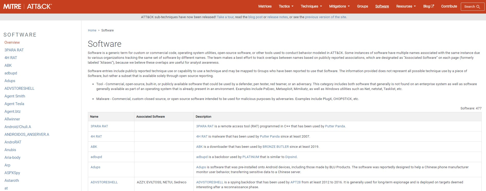
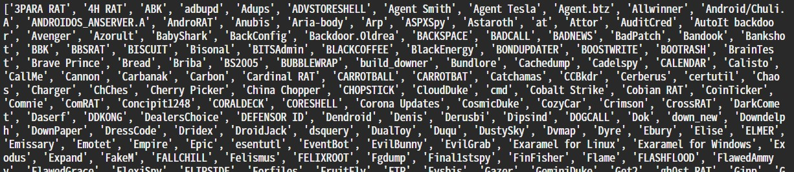
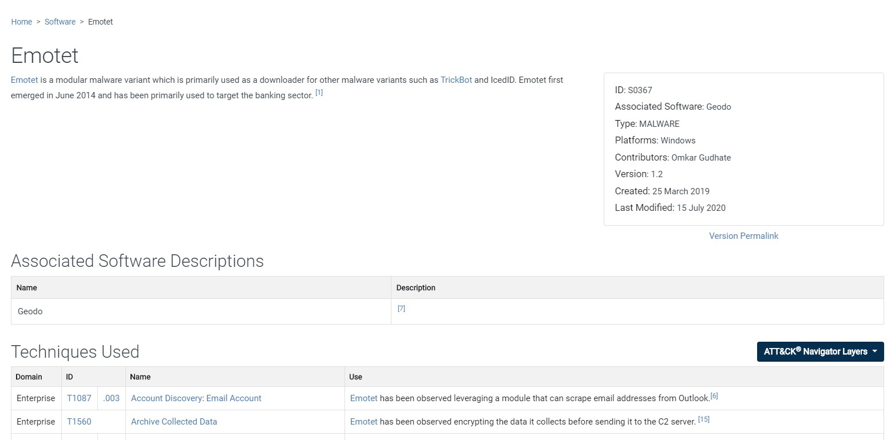

今天是實習第二天這樣，然後學長要我爬個網頁，之前對爬蟲的認識就是 Hank 學長講過一點，就花了十幾分鐘看一下再花十幾分鐘把東西爬一爬，然後我就不知道要做什麼了…，想說不然就把看到的內容整理一下，下次忘記就能直接翻這裡看。
爬蟲就是用程式去把本來會傳給瀏覽器、經過編譯給人看的內容抓下來整理成我們要的格式，這裡都以我最近要抓的網站 MITRE 為例，來抓 MITRE Software 頁面！
抓網頁內容
先 import 需要的 package。
1 | import requests |
把網站抓下來
1 | resp = requests.get("https://attack.mitre.org/software/") |
上面的 requests.get 就直接得到完整 response 了，print(resp) 會印出 HTTP Status Code，resp.text 則可以取得網頁內容，BeautifulSoup 則是可以方便我們拆開網頁內容的工具，所以這裡總之就先把網頁內容餵給它。
若需要印出給人看一點的 html 內容
1 | print(bs.prettify()) |
整理資料
要去整理網頁資料就要先觀察它的架構，還有要爬的內容。
這裡以爬 Software 頁面的所有 Software 名字為例子，整個網頁長得像這個樣子

若要取得這個網頁的大標 Software，可以先看看它的 source code，看到大標是用
<h1></h1> tag 起來，所以可以這樣來取得
1 | print(bs.h1) |
上面這種會連著 tag 完整的印出來，也可以只取文字和去掉前後的空白
1 | print(bs.h1.text.strip()) |
用上面這些方法只能拿到第一個 tag 節點，所以我們這裡要從 table 抓內容、拿所有 <td> 時就得用
1 | print(bs.table.find_all('td')) |
回傳的格式會是一個 list，裡面塞著所有網頁中的 <td> 內容，稍微清理一下我們就能得到 software name list 了
1 | software_name = [] |

若需要取得其他內容，像是
<a> 中的 href 等等，也可以這樣拿
1 | software_table[0].a['href'] |
最後紀錄一下，像是在下面的這種單一 software 頁面中，有多個 table 但是我只需要特定的那個怎麼辦？

可以用這種方法
1 | stand = bs.find('h2',text='Techniques Used') |
Request 的其他功能
若在取 request 需要用 POST 的話
1 | payload = (('key1', 'value1'), ('key1', 'value2')) |
需要加 cookie 的話
1 | requests.get('https://www.example.tw/index.html',cookies={'key':'value'}) |
一些 dict 的基礎
生成一個 dict
1 | software_name = {} |
塞資料，舉例 key 是流水號，value 是 software name
1 | for i in range(len(software_table)): |
要把 dict 裡面的資料一一讀取
1 | for num, software in software_name.items(): |
一些生成 json 格式會用到的
要先 import json
1 | import json |
直接把資料包好成 dict 型別輸出
1 | with open('software_name.json', 'w') as fp: |
印出來的時候容易看一點
1 | print(json.dumps(software_name, indent=4, sort_keys=True)) |
os package 裡常用的
1 | import os |
確認路徑存不存在
1 | os.path.exists(path) |
確認檔案存不存在
1 | os.path.isfile(path + filename) |
把檔名和副檔名切開，會回傳一個 list，['檔名', '副檔名']
1 | os.path.splitext(path) |
列出資料夾下的所有東西
1 | os.listdir(path) |
有兩種創資料夾的方式，有加 s 的是把整個路徑都建出來，另外一個是前面的必須先存在，它只建最尾端的那個，若前面的不存在就會出錯
1 | os.mkdir(save_path) |
就醬
學長的講義真的超級清楚，細節再另外自己 google 一下就很完善了，python 真的很容易上手，沒什麼門檻，所以爬蟲也寫起來很輕鬆，只要結構能搞清楚後，要收集大量網頁資料就很容易了，希望之後可以派些新工作給我，雖然這樣涼涼的也不錯啦…我就做自己的事。
References
- Hank Lu / Python 入門
- Python 使用 requests 模組產生 HTTP 請求，下載網頁資料教學
- Python 使用 Beautiful Soup 抓取與解析網頁資料，開發網路爬蟲教學